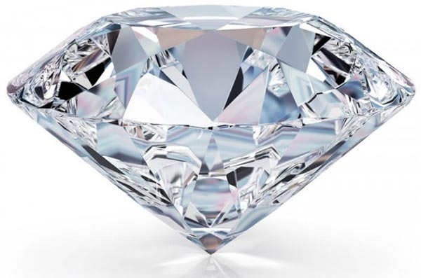
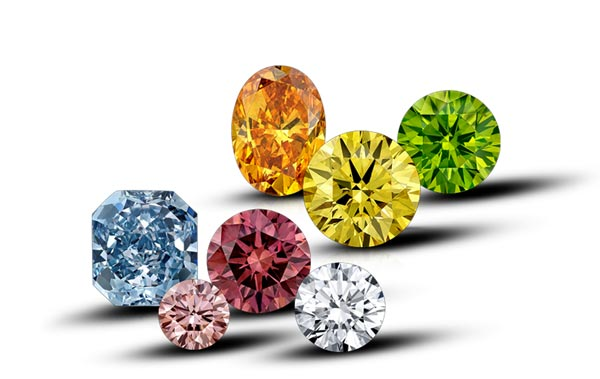

Üdvözöljük látogatóinkat!
Ezen a weboldalon bepillanthatnak a gyémántok titokzatos világába.
Az első link egy jelszót kér.
Innen egy olyan oldalra jut, ahol információkat kaphat egy híres gyémántról.
A második link egy hasznos oldal: tennivalóit gyűjtheti, rendszerezheti.
A harmadik oldalon pedig egy játék segítségével felmérheti mennyire gyorsan reagál?
Mennyire éber?
Jó szórakozást!


